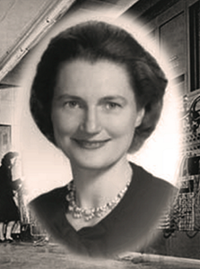

Gender Imbalance
and the understated importance of mentoring in technology
a presentation by Jennifer Wadella / @likeOMGitsFEDAY
But First ....
About Me
Jennifer Wadella @likeOMGitsFEDAY
- Graphic Design & Business Management from Drake University. (lulz)
- Self-taught JavaScript developer
- Community Organizer
- Founder of Kansas City Women in Technology
Programs I've launched

Goal of this talk:
empower you to improve diversity in technology.
- History of women in programming.
- What happened?
- Current programs helping solve the diversity problem.
- How to improve your workplace.
- How to attract female candidates.
- How to encourage mentoring.
- Resources to learn more.
History of Women in Programming
- Ada Lovelace
- Grace Hopper
- Erna Schnieder Hoover
Ada Lovelace

“The more I study, the more insatiable do I feel my genius for it to be.”
Grace Hopper
“The most dangerous phrase in the language is, "We've always done it this way.”
Erna Schnieder Hoover
“I designed the executive program for handling situations when there are too many calls, to keep it operating efficiently without hanging up on itself. Basically it was designed to keep the machine from throwing up its hands and going berserk.”
What Happened?

Computers for homes were produced ... and only marketed to boys
RadioShack 1980's Ad
Today: marketers continue to screw the pooch


Even some of the good engagement attempts are disasterous

Ok, that's a good start.
Wait, wat?
Mattel has since pulled this book from shelves.

Fortunately, you can rewrite this book via Feminist Hacker Barbie
tl;dr: girls are being told the exact OPPOSITE from boys when it comes to exploring STEM.
The Trouble With Bright Girls
“Bright girls believe that their abilities are innate and unchangeable, while bright boys believe that they can develop ability through effort and practice.”
https://www.psychologytoday.com/blog/the-science-success/201101/the-trouble-bright-girlsCurrent programs solving the gender issue.
@sheplusplus
SHE++ is a social enterprise that empowers women to make their mark on the technology industry. We believe that when women are equally represented in technology development, we accelerate innovation for those who need it most.
@girldevelopit
Girl Develop It is a nonprofit organization that exists to provide affordable and judgment-free opportunities for women interested in learning web and software development. Through in-person classes and community support, Girl Develop It helps women of diverse backgrounds achieve their technology goals and build confidence in their careers and their every day lives.
@girlswhocode
Girls Who Code programs work to inspire, educate, and equip girls with the computing skills to pursue 21st century opportunities.
@blackgirlscode
Black Girls Code's vision is to increase the number of women of color in the digital space by empowering girls of color ages 7 to 17 to become innovators in STEM fields, leaders in their communities, and builders of their own futures through exposure to computer science and technology.
@Hackbright
Hackbright Academy is the leading software engineering school for women founded in San Francisco in 2012. The academy graduates more female engineers than Stanford and UC Berkeley each year.

@pyladies
Pyladies is an international mentorship group with a focus on helping more women become active participants and leaders in the Python open-source community. Our mission is to promote, educate and advance a diverse Python community through outreach, education, conferences, events and social gatherings.

@ncwit
National Center for Women & Information Technology (NCWIT) is a non-profit community of more than 600 universities, companies, non-profits, and government organizations nationwide working to increase women’s participation in computing and technology. NCWIT equips change leaders with resources for taking action in recruiting, retaining, and advancing women from K–12 and higher education through industry and entrepreneurial careers.
@anitaborg_org
The Grace Hopper Celebration of Women in Computing is the World's Largest Gathering of Women Technologists. It is produced by the Anita Borg Institute and presented in partnership with ACM.
How to improve your workplace.
- Have women in leadership roles
- Develop a mentorship program
- Create a diversity support group
- Watch your 'wage gap'
- Revise HR policy
- Advocate for better maternity/paternity leave policies
- Provide facilities for new mothers
- Offer Flex Time
- Give employees hours to donate towards community service
Have women in leadership roles
Develop a mentorship program
stats hereCreate a diversity support group
stats hereHow to attract female candidates.
- One is smaller than...
- Two is smaller than...
- Three!
Resources:
- Lean In.